[N-World Contents] [Book Contents] [Prev] [Next] [Index]
Removing Geometry
In this chapter we'll describe some techniques for removing detail from an object.
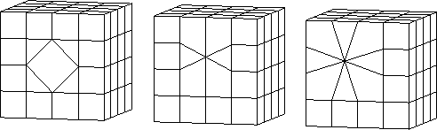
In this Chapter
You'll learn how to use the following commands to reduce the geometry on an object:
You may want to remove geometry if:
Dissolve
When you Dissolve a segment, the adjoining faces are merged into a single face.
Try this:
1. Create a cube.
2. (CLICK-L) on bodies on the element sensitivity menu.
3. (SHIFT-L) on the cube, then (CLICK-R) on Select Elements.
- This collects all the faces on the cube.
4. (CLICK-L) on Edge Subdivide.
5. With the faces still selected, Edge Subdivide again.
- Your cube should look like this:
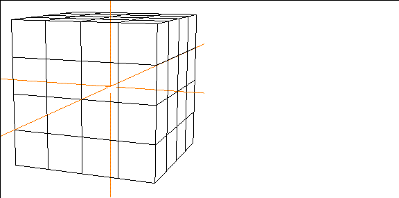
Figure 12.1 Dissolving an edge
6. (SHIFT-L) on one of the segments near the center of the cube.
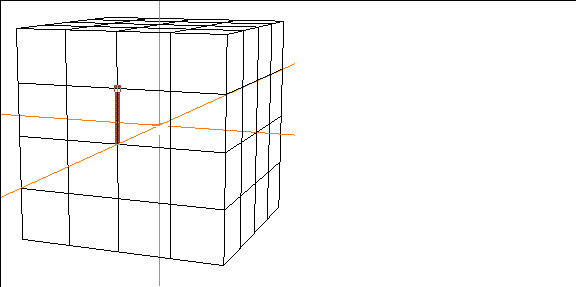
Figure 12.2 Select a segment to dissolve
7. (CLICK-L) on Dissolve.
- The segment is dissolved:
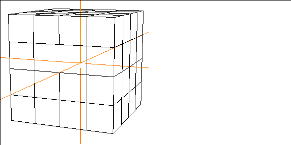
Figure 12.3 The segment is dissolved
The two faces previously separated by the segment are merged into a single face:
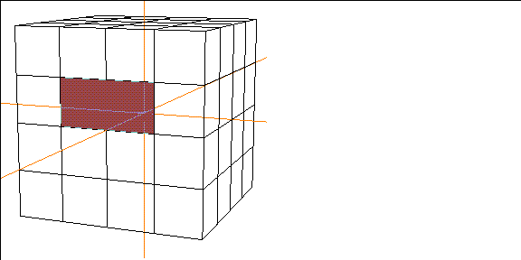
Figure 12.4 The resulting face
Dissolving Segments between Non-Flat Faces
If you dissolve a segment between two faces that do not lie on a common plane, N-Geometry creates a non-planar face.
Typically, you'll have some minimum tolerance of acceptability regarding maximum non-flat face angle; this may depend on your renderer.
- Note. N-Geometry will let you dissolve any segment.
Try this:
8. (SHIFT-L) on a segment on the edge of the cube.
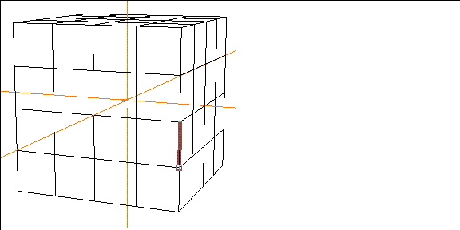
Figure 12.5 Select a segment on the edge of the cube
9. (CLICK-L) on Dissolve.
- The resulting face, although non-flat, can still be selected and modified like any other face on the polyhedra:
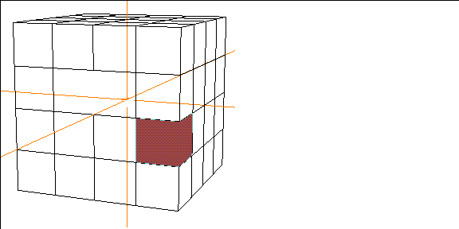
Figure 12.6 Select the resulting face
10. (SHIFT-L) on the face, then (CLICK-L) on Extrude.
- N-Geometry extrudes the face, adding any geometry required to keep the surface of the model intact:
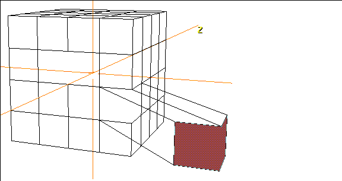
Figure 12.7 Extruding the non-flat face
Of course, you can use the Cut operation on the non-flat face if you decide that you actually do need flat faces.
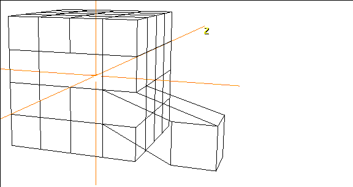
Figure 12.8 Cutting the non-flat face
Merge Region
The Merge Region command lets you combine a group of neighboring faces into a single new face.
Try this:
1. Create a cube.
2. (CLICK-L) on bodies on the element sensitivity menu.
3. (SHIFT-L) on the cube, then (CLICK-R) on Select Elements.
- This collects all the faces on the cube.
4. (CLICK-L) on Edge Subdivide.
5. With the faces still selected, Edge Subdivide again.
- Your cube should look like this:
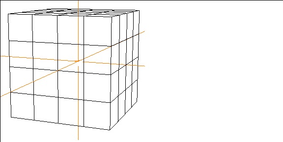
Figure 12.9 A cube, edge subdivided twice
6. Collect several contiguous faces.
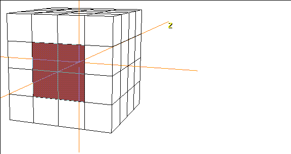
Figure 12.10 Select several contiguous faces
7. (SHIFT-L) on the collection.
8. (CLICK-L) on Merge Region.
- The faces are merged together into a single new face:
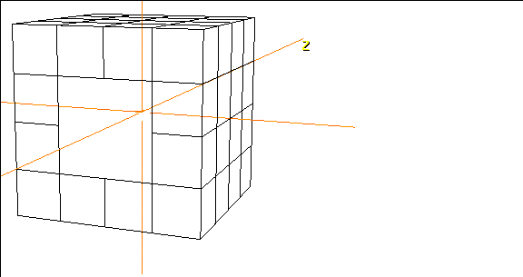
Figure 12.11 The newly created face
The resulting face can be manipulated just like any other face on the polyhedra.
- Note. You cannot merge non-contiguous faces. Although N-Geometry does not complain if you try to merge non-contiguous faces, using the command this way has no effect on an object.
Collapse
The Collapse command lets you remove an element from a polyhedra (either a vertex, segment (or bone), or face).
Essentially, the geometry on the object around the selected element "collapses" to fill the resulting void and maintain surface integrity. Trying a few examples will give you a good feel for how the command works.
Try this:
1. Create a cube.
2. (CLICK-L) on bodies on the element sensitivity menu.
3. (SHIFT-L) on the cube, then (CLICK-R) on Select Elements.
- This collects all the faces on the cube.
4. (CLICK-L) on Edge Subdivide.
5. With the faces still selected, Edge Subdivide again.
- Your cube should look like this:
Figure 12.12 A cube, edge subdivided twice
Try collapsing a vertex, segment, or face:
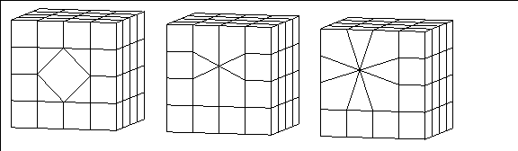
Figure 12.13 Collapsing a vertex, segment, or face
Note that collapsing an element can change the shape of your model:
Collapsing Vertices
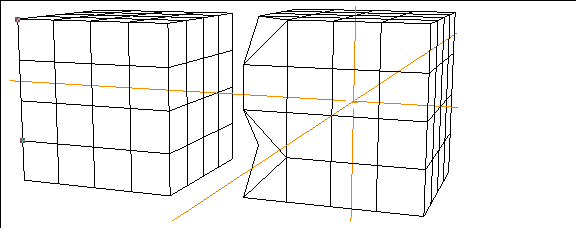
Figure 12.14 Left, selected points; right, resulting collapse
Collapsing Segments
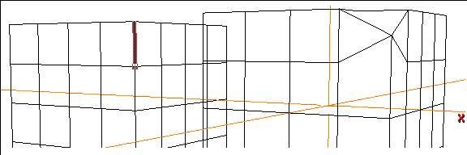
Figure 12.15 Left, selected segment; right, resulting collapse
Collapsing Faces
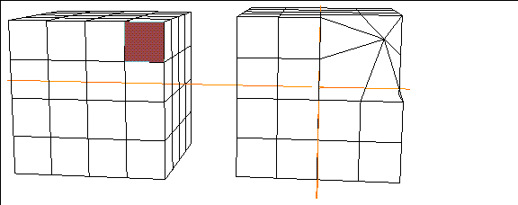
Figure 12.16 Left, selected face; right, resulting collapse
- Note. The Collapse command can easily generate non-planar (but completely legal for N-Geometry) faces. If you are exporting an object to a game platform that does not allow non-planar faces, use the Illegal Faces command on the body to detect them.
Derez
The Derez command simplifies the topology of a selected object or group of faces by dissolving edges (while retaining the object's original shape). The resolution can be reduced by various methods, all under the user's control.
To Derez an object:
1. (SHIFT-L) on the object or group of faces.
- The following menu appears:
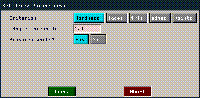
Figure 12.17 Derez menu
- Each of the options attempts to derez the object using different methods:
For each of the last four methods, the model is only changed destructively when the number of elements specified cannot maintain the original's shape; N-Geometry always makes its best attempt to maintain the shape of the original model.
Congratulations!
You've now learned some of the most commonly used techniques to reduce geometry from part of an object, or from an entire object.
As with all of the techniques described in this guide, they are best understood when practiced!
[N-World Contents] [Book Contents] [Prev] [Next] [Index]
 Another fine product from Nichimen documentation!
Another fine product from Nichimen documentation!
Copyright © 1996, Nichimen Graphics Corporation. All rights
reserved.